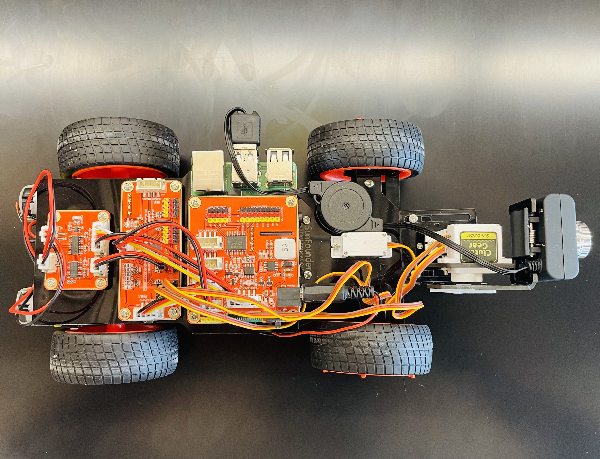
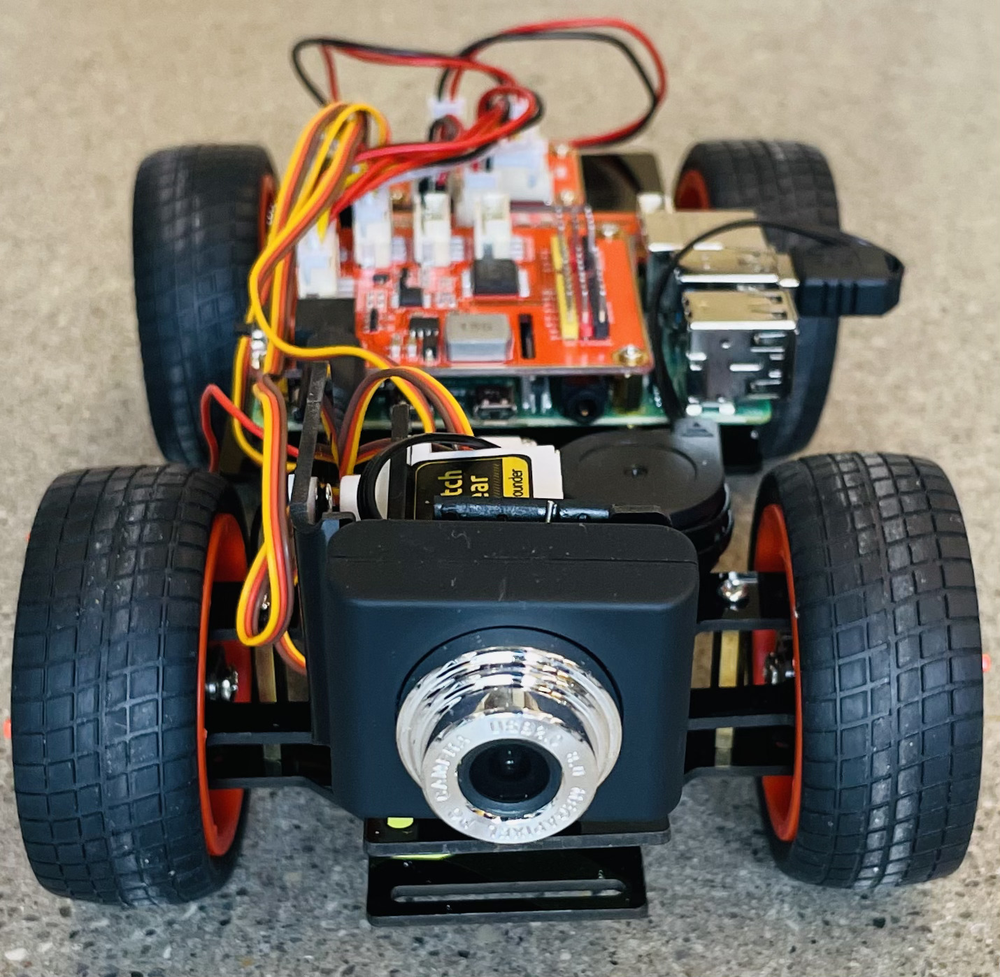

I Tried Lane Centering!
I Tried Lane Centering!

Autonomous vehicles have always intrigued me! Until today, I was fortunate to align and work along with excellent minds at the University of Michigan and Ford Motor Company. Although I have a some experience with AV stacks, I never played with hardware - until now.
This project was made possible by awesome guides by David Tian and the hardware sold by Sunfounder’s PiCar project. However, some of the installation procedures, codes and algorithms are from 2019 and may or may not work in 2022. In the case that you are another AV enthusiast like me and don’t want to waste time trying to figure why the car wont lane center, I will upload all modified codes here.
The PiCar hardware can be bought here for $100 a piece. David Tian does an excellent job of summarizing all necessary hardware. Again though, I wasn’t able to find the 18650 batteries on amazon. I simply bought them at BatteriesPlus.
Here are some pictures of the assembled cars:
 - Familiarity with Python 3.x; PiP
- RaspberryPi installations
- Some familiarity with Linux
- Familiarity with Numpy, OpenCV, image processing, basic math - Hough Transforms.
Thats all for now. Here are some cool videos! The cars lane keep and center (almost!). I will upload more content, details and codes soon!
Mayuresh Savargaonkar
Ph.D. Candidate
My research interests include, safety of autonomous vehicles, development of practical solutions using customized deep learning, and explainable AI.